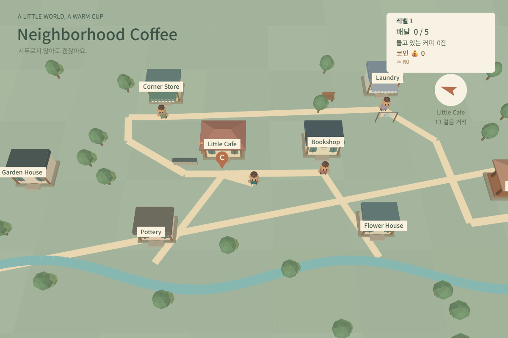
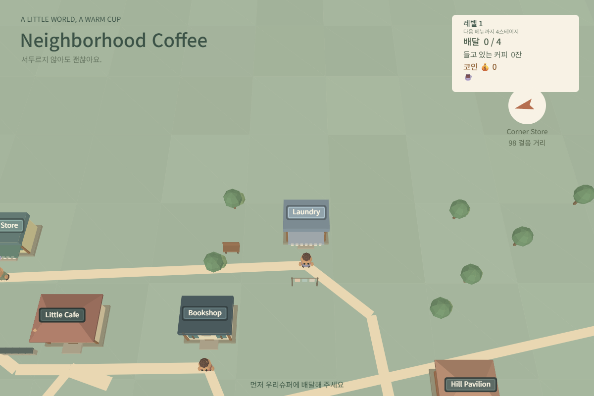
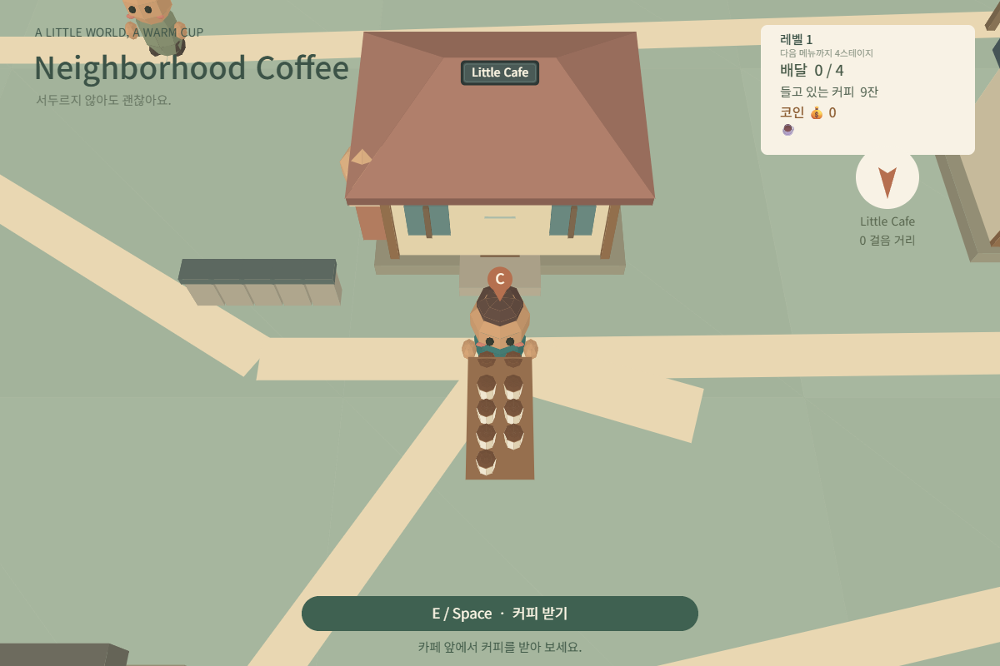
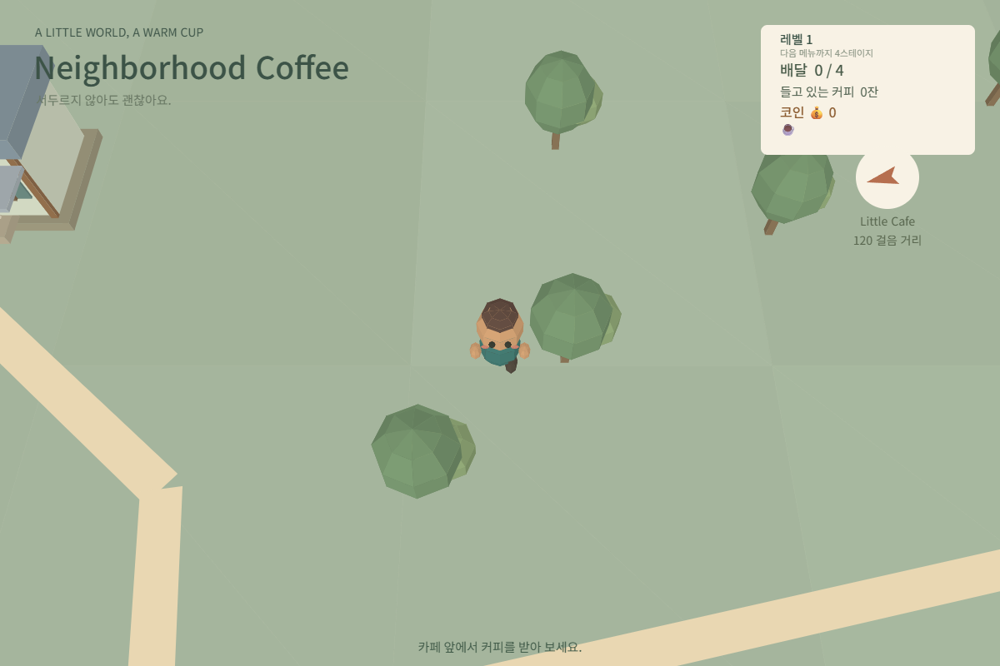

같은 커피 배달 게임을, 구조화하지 않은 요청(A)과
구조화된 요청(B)으로 각각 수정해본 비교 실험
※ A와 B 모두 같은 모델(Claude Sonnet 5)과 같은 언어(중국어)로 대화했고, B는 A가 만든 결과물을 이어받아 계속 개발했습니다.
"144잔→88잔"으로 잔 수를 줄이고 싶다는 의도만 전달 → 적용 범위를 안 써서 AI가 "8관만 88잔, 7관은 89잔"이라는 이상한 규칙을 만듦.

계산 규칙과 구체적 예시 숫자를 함께 줘서 모호함 없이 한 번에 의도대로 구현됨.

무엇이 실패했는지, 어떤 결과를 원하는지 설명이 없음. "让我尝试一下"(내가 해볼게)도 새 지시로 오해되어 다시 정정해야 했음.
AI가 그리기 순서 버그(하트가 배경에 가려짐)를 정확히 찾아내고, 원인도 설명받음.
AI가 스스로 완료 여부·확인 내용을 보고하지 않아, 사용자가 "열어봐", "끝났어?"를 반복해서 물어야 했음.
채팅창에서 따로 요청하지 않아도, 매 요청마다 자동으로 변경/확인/미확인 형식 보고가 따라옴. (= 채팅 prompt가 아니라 system prompt의 효과)
사용자가 직접 "넘치면 옆에 ×숫자로 표시"라고 설계해서 지시 → 구현은 됐지만 실제로 보니 시스템 알림처럼 보여 마음에 안 들었음. 구조화는 요구사항 누락은 막지만, 아이디어 자체가 별로일 수 있다는 건 못 막음.

1차 prompt: "모두 막아달라"고만 쓰고 개체별 확인 방법은 안 씀 → 일부만 반영됨. 2차에서 "개체별 전수 목록 + 표로 보고"를 요구한 뒤에야 전부 수정됨.
